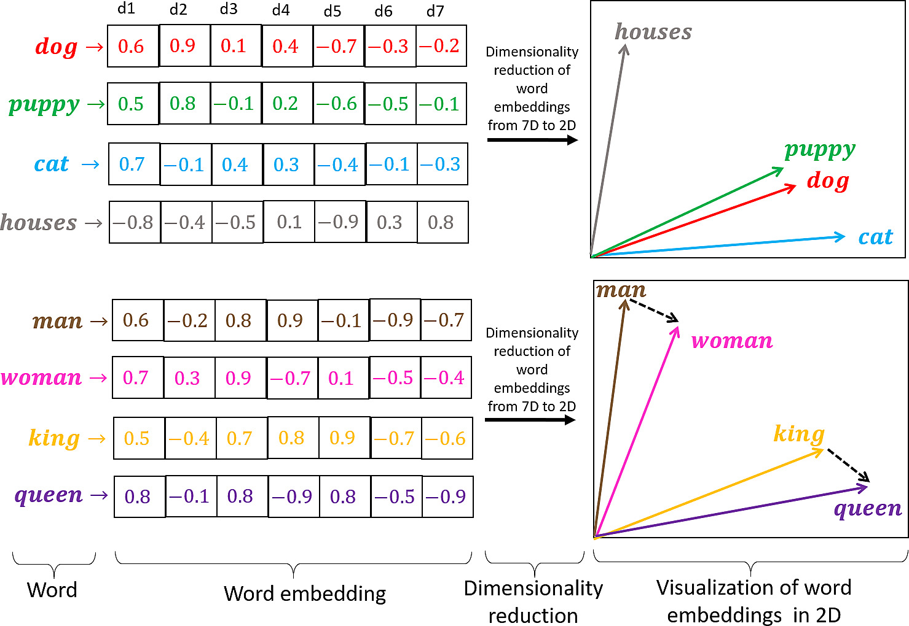

Before we build, let's see what stuck. Two quick questions — discuss with a neighbor, then we'll talk them through together.
In your own words: what is a word embedding, and why is it useful for a language model?
We measured how alike two words are using cosine similarity. What does a value close to 0 tell us about the two words?
Word embeddings place similar words close together in vector space. Which pair would you expect to have the highest cosine similarity?
A) “king” and “queen”
B) “king” and “pizza”
C) “king” and “airplane”
D) “king” and “banana”
Answer: A — “king” and “queen” are semantically close, so their embedding vectors point in nearly the same direction.
(No right or wrong — these just warm up our intuition. A full recap is on the next slide.)
Want to refer back? Last session's deck (on GitHub Pages): → Embeddings deep-dive

🎮 Play with embeddings live → embed.sheth.ioBuild the same algorithm that powers GPT-4 & Gemma — in pure Python. Learn exactly how text becomes numbers.
Turn raw text into thousands of "context → target" flashcards. This is how every language model learns.
Build a miniature neural network that predicts the next word. Watch the loss go down as it learns.
Give it a prompt like "Jide was" and watch it autocomplete a story. Real AI, running live.
No prior ML experience needed. Just Python basics and curiosity.
Open the Colab Notebook or your local Python environment. Run these two blocks:
# Install the tokenizer library
!pip install tiktoken -q
# Import everything we need
import re, math
from collections import defaultdict, Counter
import numpy as np, pandas as pd
import matplotlib.pyplot as plt
import torch, torch.nn as nn
from torch.nn import functional as F
import tiktoken
# Check for GPU
device = 'cuda' if torch.cuda.is_available() else 'cpu'
print(f"Running on: {device.upper()}")pip install torch numpy matplotlib tiktoken in your virtual env.
Computers don't understand words. They understand numbers. Tokenization is the bridge.
["Cassava","is","a","crop"]
Simple but fails on new words. Need huge vocabulary (500K+ words).
["C","a","s","s","a","v","a"," ","i","s",...]
Handles any word but makes very long sequences — slow training.
["Cass","ava","is","a","crop"]
Best of both worlds. Common words = 1 token. Rare words = split into pieces.
BPE (Byte-Pair Encoding) is what GPT-4, Gemma, LLaMA, and Claude all use.
Imagine you're a toddler learning to read. You start with letters, then notice some pairs appear together a lot.
Split every word into individual letters + a word-end marker </w>
Example: "crop" → "c r o p </w>"
Count every adjacent pair. Find the most frequent one.
("c","a"): 2 times, ("a","</w>"): 9 times ...
Merge the winner into a new single token everywhere.
"c a" → "ca" (now treated as one unit)
Repeat until you reach your target vocabulary size.
50 merges → 80 tokens. 1000 merges → 1000+ tokens.
Tracing the algorithm on a tiny agriculture corpus.
Each merge creates a new subword. The order of merges reveals the statistical patterns in your text.
We only need 4 small functions to build BPE from scratch. Let's read them together.
get_vocab()Break text into words → split into characters → add </w>
get_stats()Count how often every pair of symbols appears together.
merge_vocab()Replace the most frequent pair with a new merged token.
bpe_train()Loop: count → merge → repeat until target vocab size.
def get_vocab(corpus):
vocab = {}
for word in corpus.lower().split():
tokenized = " ".join(list(word)) + " </w>"
vocab[tokenized] = vocab.get(tokenized, 0) + 1
return vocab
def get_stats(vocab):
pairs = defaultdict(int)
for word, freq in vocab.items():
symbols = word.split()
for i in range(len(symbols) - 1):
pairs[(symbols[i], symbols[i+1])] += freq
return pairs
def merge_vocab(pair, vocab):
a, b = pair
merged = a + b.replace("</w>", "")
pattern = " ".join([a, b])
new_vocab = {}
for word, freq in vocab.items():
new_vocab[word.replace(pattern, merged)] = freq
return new_vocabWe'll feed BPE sentences about African farming and watch it learn.
CORPUS = "Cassava is a major food crop in Nigeria and across sub-Saharan Africa. Farmers in Kenya grow maize beans and sweet potatoes. The cocoa industry in Ghana and Ivory Coast produces most of the world's chocolate. Climate change affects rainfall patterns across East Africa. Drought resistant crops like millet and sorghum are important for food security. Smallholder farmers use sustainable farming practices to improve crop yields."
# Train to 50 total tokens (starts from ~30 letters)
merges, final_vocab, _ = bpe_train(CORPUS, vocab_size=50)
# Sample output you'll see:
Merge 1: 'a' + '</w>' → "a</w>"
Merge 5: 't' + 'h' → "th"
Merge 10: 'in' + 'g' → "ing"Then we tokenize a new sentence:
test = "Farmers grow cassava in Nigeria"
tokens = tokenize_bpe(test, merges)
print(tokens) # → ['Farm', 'ers', 'grow', 'cass', 'ava', 'in', 'Nig', 'eri', 'a']Notice how "cassava" splits into cass + ava — the algorithm learned that "cass" and "ava" are useful subwords!
Our custom BPE works, but it only has 50 tokens. Real LLMs use 100,000+ tokens. Let's use tiktoken — the tokenizer behind GPT-4.
# Tiktoken has ~100K tokens trained on billions of pages
enc = tiktoken.get_encoding("cl100k_base")
# Our tiny story for training
raw_text = """Jide was hungry so she went looking for food. She checked the market, but it was closed. Then, she found a small cafe and ordered some rice and water. She was very happy to finally eat!"""
# Encode: text → numbers
data = torch.tensor(enc.encode(raw_text), dtype=torch.long)
print(f"Characters: {len(raw_text)} → Tokens: {len(data)}")
# Output: "Characters: 188 → Tokens: 43"
# Decode a token back to prove it works
print(enc.decode([data[0].item()])) # → "Jide"43 tokens to represent 188 characters. That's the power of a good tokenizer — it compresses text efficiently.
A number alone (token ID) has no meaning — "397" and "401" don't tell us the words are related. Embeddings fix this by mapping each token to a vector of numbers where similar words live close together.
Each token gets its own embedding — a list of, say, 32 numbers. Think of it as a coordinate in meaning-space.
"cat" and "dog" have similar vectors (both pets). "king" is close to "queen" but far from "apple". The model learns these relationships.
Embeddings start as random noise. As the model trains, it pushes/pulls words closer or farther apart to capture meaning.
Embedding for "king" → [0.23, -1.45, 0.67, ..., 0.12] (32 numbers) Embedding for "queen" → [0.25, -1.40, 0.62, ..., 0.15] (very similar!) Embedding for "apple" → [-0.98, 2.10, -0.33, ..., 0.88] (very different)
Last session you explored embeddings in depth — t-SNE maps and cosine similarity. Today we put them to work: those same vectors become the model's memory, learned live as it trains.
A language model's only job: predict the next token. We create flashcards: "Given these tokens, what comes next?"
block_size = 8 # How many tokens the model sees at once
batch_size = 4 # How many examples we process together
def get_batch():
ix = torch.randint(len(data) - block_size, (batch_size,))
x = torch.stack([data[i:i+block_size] for i in ix]) # Context
y = torch.stack([data[i+1:i+block_size+1] for i in ix]) # Target
return x.to(device), y.to(device)The model sees 8 tokens at a time and must predict token #9. We make thousands of these from our tiny story.
A miniature version of what powers ChatGPT. Three parts:
Each token ID → a vector of 32 numbers. Similar words get similar vectors.
nn.Embedding(vocab_size, n_embd=32)
Each position (1st, 2nd, 3rd...) → a vector. Helps the model know word order.
nn.Embedding(block_size, n_embd)
Predicts which token comes next. Like a "what's the most likely next word?" machine.
nn.Linear(n_embd, vocab_size)
class TinySLM(nn.Module):
def __init__(self, vocab_size, n_embd):
super().__init__()
self.token_embedding_table = nn.Embedding(vocab_size, n_embd)
self.position_embedding_table = nn.Embedding(block_size, n_embd)
self.lm_head = nn.Linear(n_embd, vocab_size)
def forward(self, idx, targets=None):
B, T = idx.shape
tok_emb = self.token_embedding_table(idx)
pos_emb = self.position_embedding_table(
torch.arange(T, device=device))
x = tok_emb + pos_emb
logits = self.lm_head(x)
if targets is None:
return logits, None
B, T, C = logits.shape
loss = F.cross_entropy(logits.view(B*T, C), targets.view(B*T))
return logits, lossThe two embedding tables are the heart of the model — they store the meaning of every word, exactly the vectors you explored last session. Training is just the model learning better embeddings so it can predict what comes next.
Total: ~6.5 million parameters. Tiny by today's standards (GPT-4 has trillions), but enough to learn patterns!
A fresh model guesses randomly. Training fixes that — one tiny adjustment at a time.
Feed context, get prediction, calculate loss. Loss = "how wrong are we?" (lower is better)
Use loss.backward() to calculate the gradient — the direction to nudge each weight.
optimizer.step() applies the nudges. The model becomes slightly less wrong.
optimizer = torch.optim.AdamW(model.parameters(), lr=1e-3)
for step in range(600):
xb, yb = get_batch() # Grab a batch
logits, loss = model(xb, yb) # Forward pass
optimizer.zero_grad(set_to_none=True)
loss.backward() # Backward pass
optimizer.step() # Update weights
if step % 100 == 0:
print(f"Step {step}: Loss = {loss.item():.4f}")Watch the loss go from ~10 (random guessing) down to ~1.5 (learning patterns).
After training, our tiny model can generate text. We give it a starting word and ask: "What comes next?"
def generate(self, idx, max_new_tokens, temperature=1.0):
for _ in range(max_new_tokens):
idx_cond = idx[:, -block_size:] # Only use last 8 tokens
logits, _ = self(idx_cond) # Predict
logits = logits[:, -1, :] / temperature # Scale by temperature
probs = F.softmax(logits, dim=-1) # Convert to probabilities
idx_next = torch.multinomial(probs, 1) # Sample
idx = torch.cat((idx, idx_next), dim=1) # Append
return idxTemperature trick: Lower = more focused/repetitive, Higher = more creative/risky. Try temperature=0.8!
Our first model was tiny (32-dim embeddings, 8-token context, 600 steps). Let's level up.
Wider context window = the model sees more of the story before predicting. More coherent text.
Richer token representations. Each word gets a more detailed vector. Better pattern capture.
More training = more chances to learn. Each pass refines the weights a little more.
Result: A model that generates much more coherent text. Try it in Colab — change these 3 numbers and watch the difference!
Scale the recipe further: The same architecture at a larger size reaches 12,937,781 parameters — more capacity means more patterns it can capture. (Our BiggerSLM uses ~6.5M; bigger still = smarter still.)
Start with characters, merge the most common pair, repeat. The merge order reveals language patterns.
Smaller vocab = more tokens per word (handles rare words). Larger vocab = fewer tokens (faster, but bigger model).
Every language model learns by predicting the next token. The sliding window turns raw text into context→target flashcards.
With only ~6.5M parameters and a 4-sentence story, our model learned to generate coherent text. That's the magic of neural networks.
💡 The big idea: Every word's meaning lives in its embedding — the same vectors you explored last session. When we train this little model, we are really just learning better embeddings so it can predict the next word. That's the whole magic of language models!
Questions? Let's discuss.
TRI AI Saturdays · Cohort 10 · In partnership with Google DeepMind